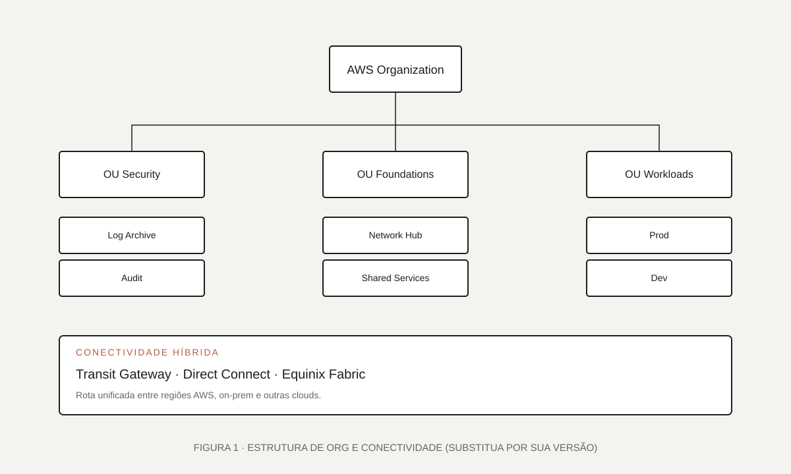

01 · Visão geral
Uma base AWS pensada para receber workloads em escala.
A fundação AWS foi construída para receber cargas críticas com padrões claros de operação, segurança, rede e adoção. O objetivo era eliminar retrabalho e criar uma superfície previsível para os times de aplicação.
[Descreva aqui o contexto: qual era a maturidade AWS antes do projeto, quais times estavam envolvidos e por que a fundação era prioridade.]
Ambientes AWS crescendo sem estrutura, com esforço manual para cada nova conta.
Landing Zone versionada, guardrails ativos e conectividade híbrida padronizada.
Onboarding de contas e workloads mais previsível, seguro e auditável.
02 · O desafio
Múltiplas contas, várias regiões, muitos caminhos.
Precisávamos suportar contas em várias regiões AWS, conectividade com o on-premises e integração com outras clouds. Tudo isso sem transformar o time de plataforma no único ponto por onde qualquer coisa passa.
“Padronizar sem centralizar a ponto de virar gargalo — esse foi o equilíbrio buscado.”
- Estrutura organizacional que reflita segurança, redes e workloads.
- Conectividade híbrida confiável para cargas críticas.
- Guardrails contra derivas de configuração sem travar squads.
- Operação com runbooks, monitoramento e ownership definidos.
03 · Meu papel
Atuação nas três frentes principais.
Participei das frentes de Operations, Landing Zone e Security, além de contribuir com a conectividade híbrida e multi-cloud. Trabalhei próximo a redes, segurança e produtos.
Operations: práticas, runbooks, monitoramento e onboarding operacional das contas.
Landing Zone: IaC, organização, guardrails e templates de contas.
Security: baseline de identidade, criptografia, logging centralizado e detecção.
04 · Arquitetura
Organizada em OUs com um hub de rede dedicado.
A organização AWS é dividida em OUs por responsabilidade — segurança, fundações e workloads. Um hub de rede próprio concentra a conectividade híbrida e a rota para outras clouds.

assets/projetos/arquitetura-fundacao-aws.svg.Componentes principais
Organization & Accounts
AWS Organizations, SCPs, contas para Log Archive, Audit, Network e Workloads.
Rede
Transit Gateway, VPCs padronizadas, resolução DNS híbrida e roteamento centralizado.
Conectividade híbrida
Direct Connect com Equinix Fabric para on-premises e outras clouds.
Segurança & Observabilidade
Config, CloudTrail, GuardDuty, Security Hub e logs consolidados.
05 · Implementação
Do baseline ao onboarding automatizado.
A implementação seguiu uma trilha clara: primeiro os fundamentos, depois automação de contas e por fim onboarding de workloads reais. Cada etapa foi validada com pilotos.
- 1
Baseline
Organizations, contas base, guardrails, IAM Identity Center e logging.
- 2
Rede
Transit Gateway, VPCs padronizadas e conectividade com o on-premises.
- 3
Automação
Pipelines para criar novas contas, aplicar baseline e integrar com observabilidade.
- 4
Onboarding
Migração de workloads existentes e onboarding de novas iniciativas.

06 · Decisões técnicas
Padronizar o que dá — dar liberdade no resto.
Documentamos as decisões críticas para revisitá-las quando o contexto mudar. Nem toda escolha é permanente, e todas têm um custo.
07 · Resultados
Ambientes mais previsíveis e auditáveis.
Os principais resultados aparecem quando um novo time entra: menos dúvidas, menos esforço manual e um caminho conhecido para chegar em produção.
Contas e workloads adicionados sem retrabalho no baseline.
Postura consistente com detecção e resposta centralizadas.
Rotas híbridas e multi-cloud padronizadas para as squads.
08 · Aprendizados
Reflexões que vão para os próximos projetos.
O maior ganho não foi técnico, foi de método. Ter clareza sobre ownership entre plataforma, segurança e redes destravou muita coisa.
- Definir contratos claros entre times antes do primeiro sprint técnico.
- Investir em pipelines de teste para infra antes do primeiro incidente.
- Manter documentação viva junto com o IaC, não em ferramenta separada.